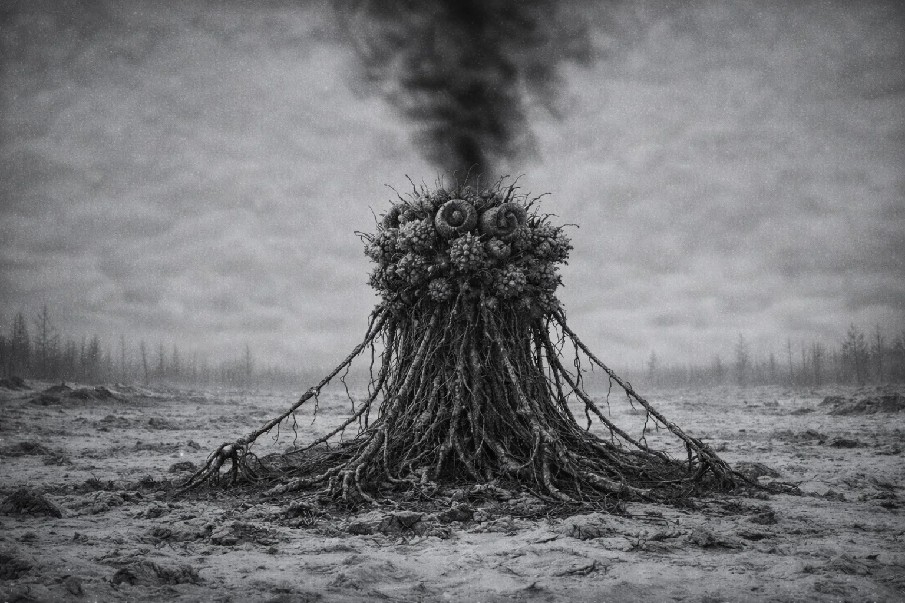
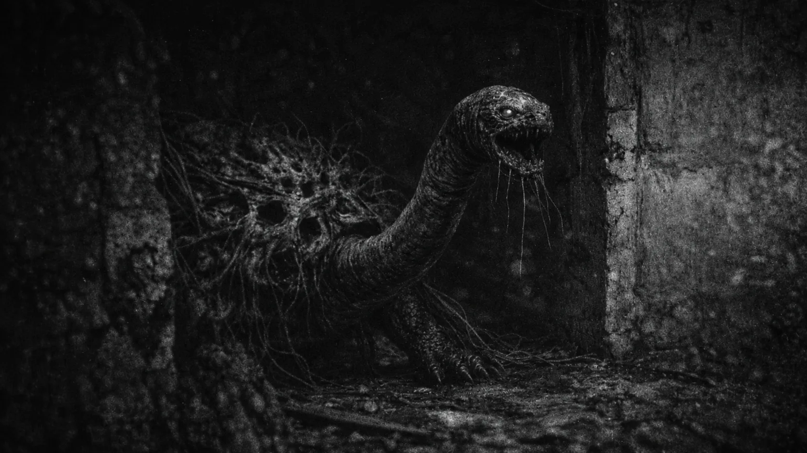
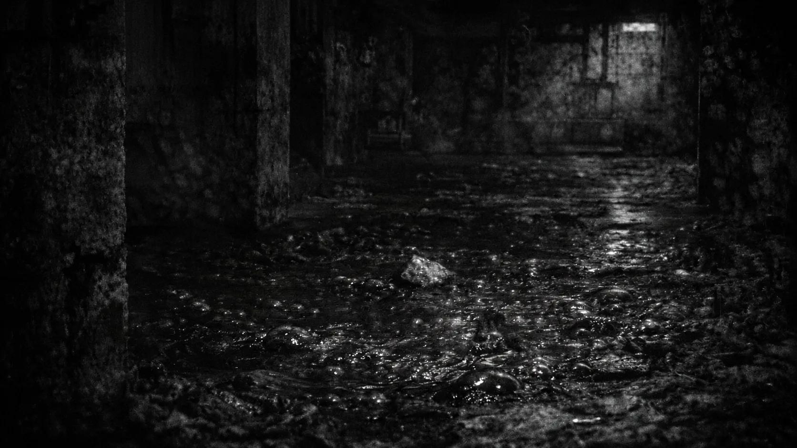

SPEC-001 / CAUTION
마네킹
사람의 형상을 닮은 초기 변이 표본입니다. 외형 식별이 늦어지기 쉬워 조우 시 접촉보다 거리 확보와 기록 대조가 우선됩니다.
FIELD REFERENCE
보고서에 반복되는 지명과 조직명, 이변체의 SPEC 분류를 찾아보세요. 필요한 항목부터 읽어도 좋습니다.
지명, 이변체, 조직과 기업을 분류별로 살펴보세요.
한국지부 사건 기준 기록명. 시설 로그, 인물 선택, 사건 분기 이 코드 하위에 정리됨. 작전 판단 시 동일 기록 체계로 대조 필요.
대중 명칭 한국 방벽. 공식 편제명 NADL. 물리 장벽 단독 체계 아님. 탐지, 경보, 차단, 기동 대응 결합형 국가 방어선.
방벽 책임 구역 구분 표기. 사건 발생 방향, 침투 경로, 출동 주체 판별 시 우선 확인되는 지명 레이어.
미국권 대형 오염·봉쇄 축. 한국 방벽과 대비되는 실패 및 봉쇄 사례로 인용됨. 외부 세계 위험 규모 비교 기준.
미국권 Z-3 피해 도시. 재난 기록, 표본, 생존자 대응 연결 구역. 이변체 위험의 도시 단위 확산 결과로 기록됨.
감염, 변이, 환경 오염 포괄 핵심 재난명. 시민 생활, 군 대응, SPEC 분류의 출발점. 세부 기원 본 페이지에서 다루지 않음.
EV-Σ 이후 확인되는 변이 개체 및 이상 표본 현장 명칭. 사람, 동물, 환경형 위험 포함 가능. 문맥 대조 필요.
이변체 표본 단위 식별 코드. 위협 유형, 대응 우선순위, 조우 기록 연결 라벨. 일반 명칭보다 운용 분류에 가까움.
감염·변이 진행 상태 기본 분류. 단계 상승 여부에 따라 격리, 이관, 보고 우선순위 변동.
한국 방벽 운용 및 대이변체 대응 상징 명칭. 대외 노출 가능 표기.
국가특수재난변이사령부. 한국 내부 특수 재난 및 변이 대응 공식 조직.
한국 장기 대응 구조와 연결되는 기업·자원 축. 방산, 기술, 바이오 인프라 접점 관측됨.
특재사 사령관 직속 자문그룹 또는 대가산업보안(DIS) 컨설팅팀 외피로 관측됨. 실체 명확히 확인되지 않음.
정부 공식 체계 외부에서 기술·정보 흔적을 남기는 세력. 협조 대상 아님. 감시·저지 우선.
물류, 바이오, 자원, 민간 보안 영역에서 반복 등장하는 기업명. 외부 접촉 기록 다수.
Meridian Group의 한국권 제한 거점. 물류, 컨설팅, 대외 접촉 기록에서 반복 관측됩니다.
일치하는 자료가 없습니다. 검색어나 분류를 바꿔보세요.
아래 항목은 작전 중 조우할 수 있는 이변체 표본명을 지휘관 열람용으로 정리한 것입니다.
사람의 형상을 닮은 초기 변이 표본입니다. 외형 식별이 늦어지기 쉬워 조우 시 접촉보다 거리 확보와 기록 대조가 우선됩니다.
군체 반응과 추격성이 강한 하위 개체입니다. 단독보다 집단 조우 시 위험이 급상승하므로 이동 경로와 후방 차단 여부를 함께 기록합니다.

고정형 확산 표본입니다. 주변 공간에 포자와 환경 오염을 남길 수 있어 개체 처치보다 접근 차단과 구역 봉쇄가 먼저 검토됩니다.
포자 집합체로 기록되는 인간형 실루엣 표본입니다. 광원에 분산되었다가 어둠에서 재형성되며, 조명 유지와 방독면 운용이 우선됩니다.

음성 유인과 현장 지휘성이 관측되는 고위험 표본입니다. 소리를 따라 이동하는 행위는 금지되며 주변 하위 개체 반응까지 함께 감시합니다.

저지대·지하·계단 하부에 형성되는 환경형 함정 표본입니다. 액체처럼 보여도 대상을 고착시킬 수 있으므로 바닥 반응 확인이 기본 절차입니다.
단독 추적성과 학습 반응이 관측되는 고위험 표본입니다. 수공간·어두운 통로에서 조우 위험이 높아 정찰 기록에는 동선 변화까지 남깁니다.